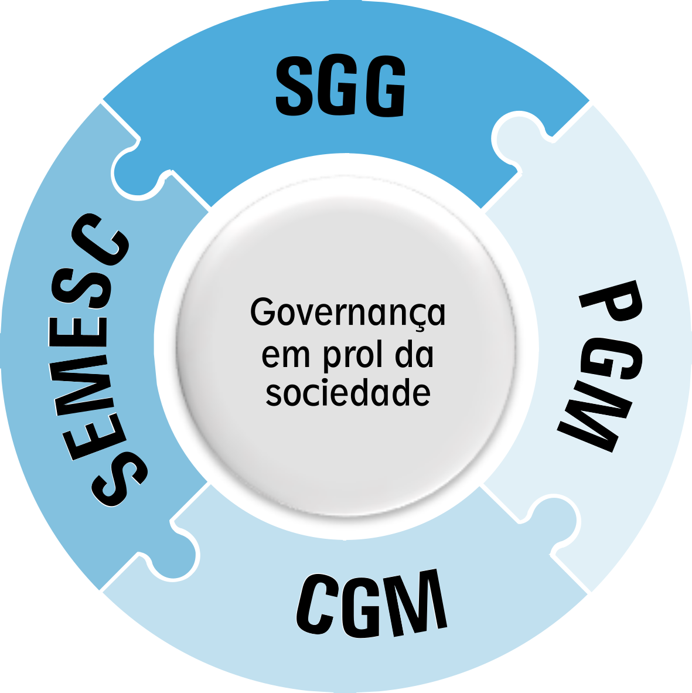
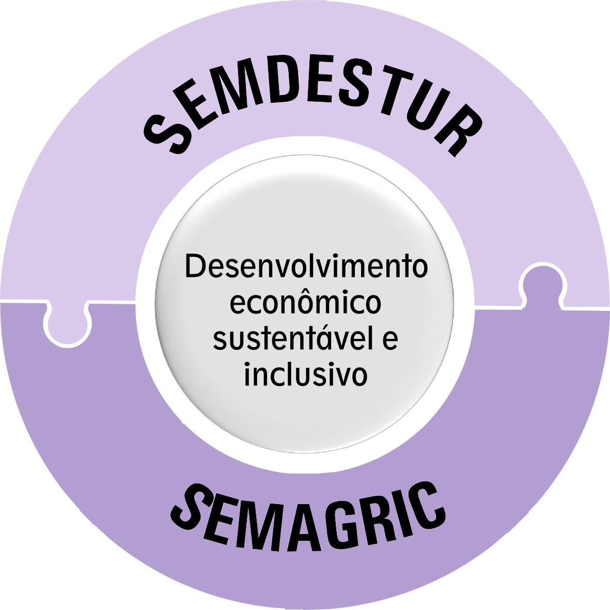
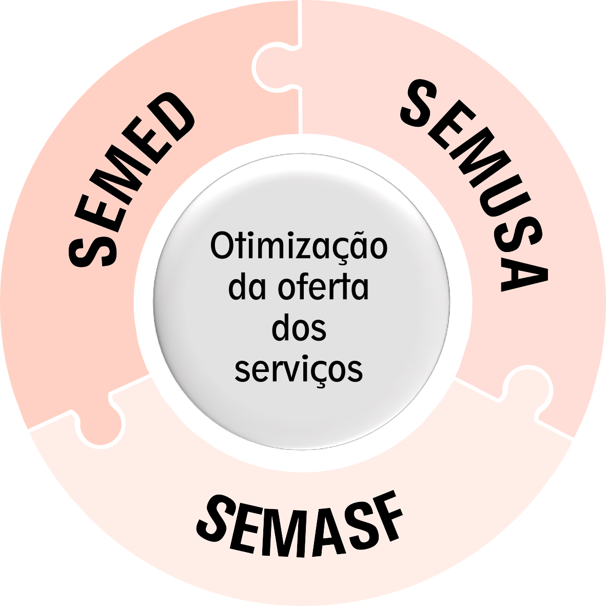
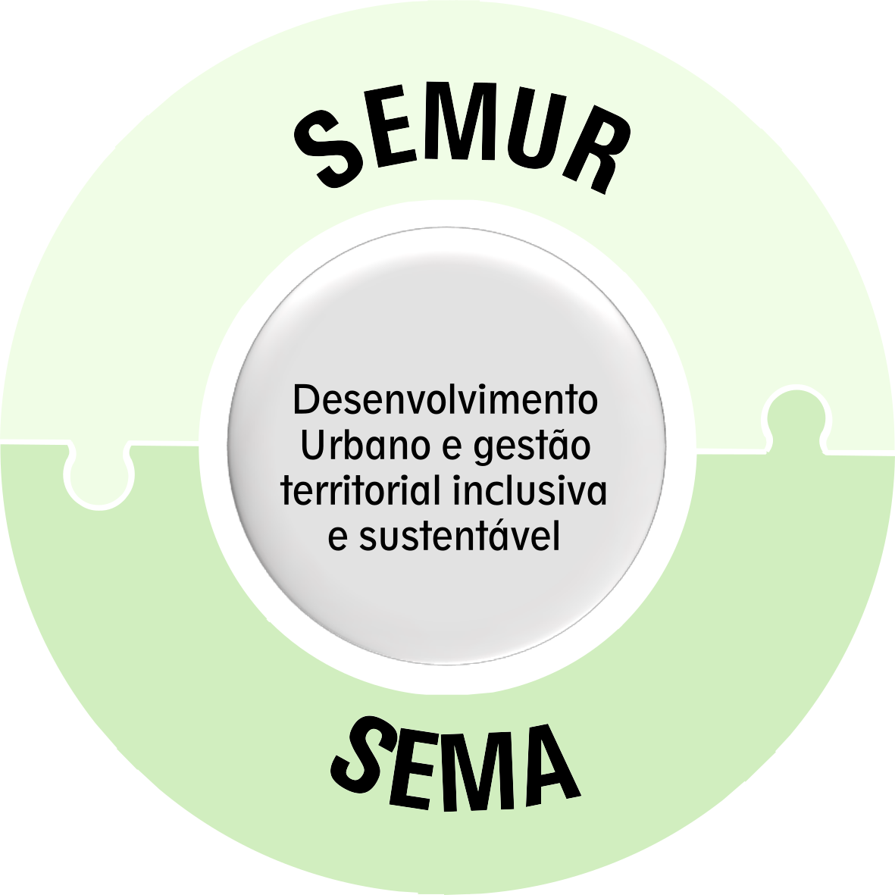
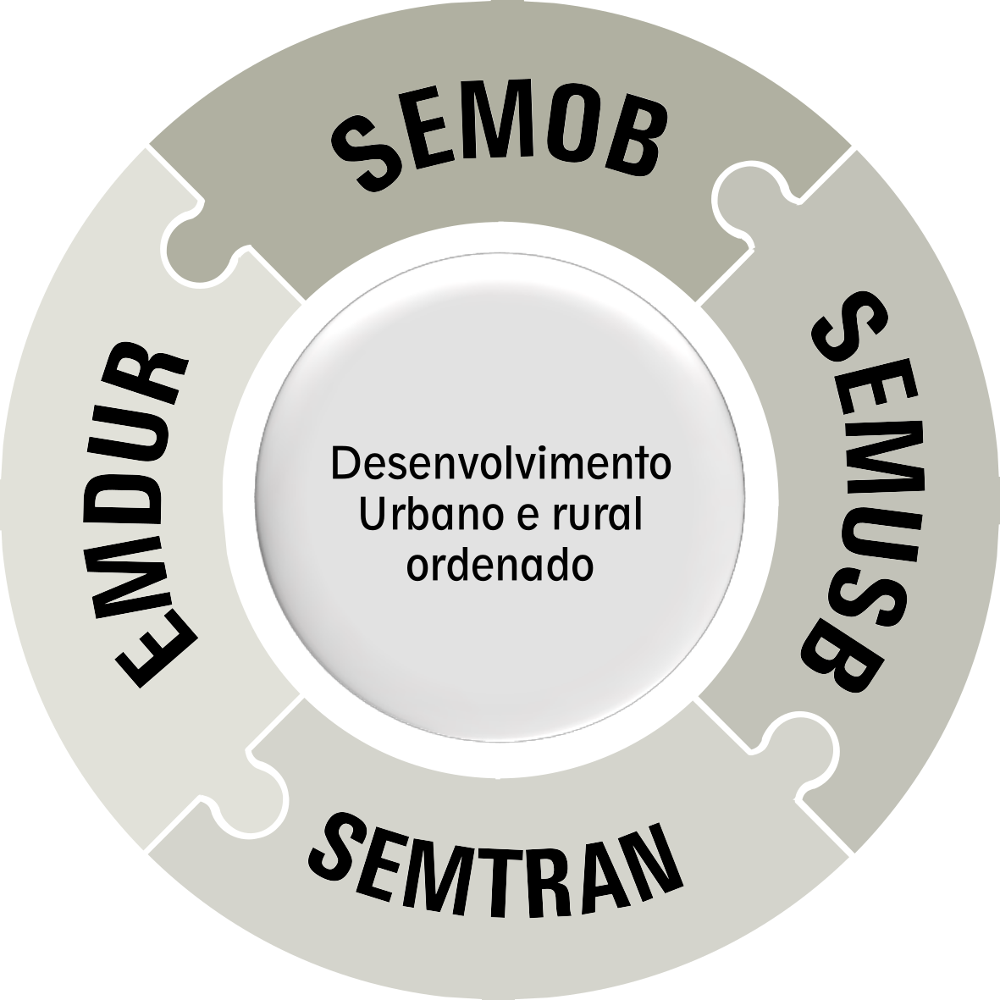

Prefeitura do Município de Porto Velho
Secretaria Municipal de Planejamento, Orçamento e Gestão - SEMPOG
O Plano Plurianual do município de Porto Velho para o quadriênio 2022 a 2025 está estruturado por programas dos Poderes Executivo e Legislativo alinhados com os macrobjetivos e as orientações de governo que compõem a sua base estratégica. Apresentamos os programas divididos em sete Segmentos de Governo, onde as Unidades Setoriais Municipais (as Secretarias) fazem parte. Abaixo você confere os segmentos e as respectivas Unidades.
Segmento Governança |
Segmento Instrumental |
Segmento Econômico |
Segmento Social |
|  |  |
 |  |
Segmento Urbanismo, Habitação e Meio Ambiente |
Segmento Infraestrutura Urbana e Serviços Básicos |
Segmento Cultura, Esporte e Lazer |
|
|  |  |  |
Para acessar cada um dos Segmentos de Governo, clique nos botões ao lado.